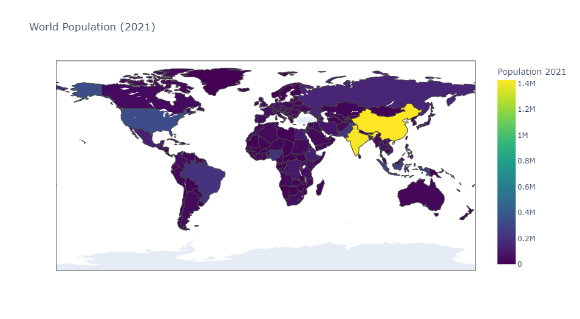

This PowerBI dashboard was developed to predict customer defaults based on their credit card transaction history. It includes multiple statistical models: Decision Tree, Logistic Regression, and K-Nearest Neighbors (KNN). The dashboard provides visual insights and allows users to interactively input customer data to predict the likelihood of default.


Check out all my Tableau projects here!
This project evaluates Woolworths Group's historical stock data, collected using the Bloomberg Terminal, to conduct stock valuation and sensitivity analysis. The analysis was carried out using advanced Excel functions, including Monte Carlo simulations.

This project visualizes global population and migration trends using data from the United Nations. It was implemented using Python libraries such as Plotly and Dash to create interactive visualizations.